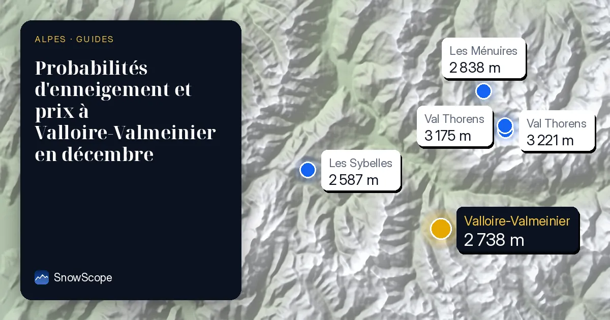

Probabilités d'enneigement et prix à Valloire-Valmeinier en décembre
Si vous prévoyez un séjour au ski à Valloire-Valmeinier en décembre, les chances d'avoir de la neige dépendent beaucoup de la semaine choisie. Notre historique de 46 hivers passés montre que si la base peut être fine au début, les pistes en altitude sont très fiables. À la mi-décembre, la zone à mi-montagne a 98 % de chances d'avoir au moins 30 cm de neige.
Consultez les prévisions neige en temps réel pour Valloire-Valmeinier sur l'application SnowScopeHauteurs de neige, alertes poudreuse et carte 3D, gratuitement.
Probabilités d'enneigement hebdomadaires à la base
Au pied des remontées mécaniques, situées à 1 406 m, la première semaine de décembre est souvent peu enneigée. Dans notre historique, seuls 26 % des hivers passés ont eu au moins 30 cm de neige pendant la première semaine. Cette probabilité augmente au fil du mois. À la deuxième semaine, la chance d'avoir 30 cm à la base monte à 43 %, et elle atteint 50 % entre le 15 et le 21 décembre. Pour la semaine de Noël, les chances s'améliorent à 65 %.
Si vous cherchez une base plus épaisse de 50 cm ou plus à 1 406 m, les chiffres sont beaucoup plus bas. Lors de la première semaine de décembre, cela n'est arrivé que dans 2 % des hivers passés. À la dernière semaine du mois, la chance d'avoir une base de 50 cm n'est que de 30 %. La neige commence généralement à tenir au sol à cette altitude vers le 22 octobre, et l'épaisseur habituelle le 15 décembre est de 29 cm.

Fiabilité à mi-montagne et au sommet
La situation change considérablement en montant. À mi-montagne, à 2 072 m, l'épaisseur habituelle en décembre est de 66 cm. Durant la première semaine du mois, il y a 76 % de chances d'avoir au moins 30 cm de neige. À la deuxième semaine, cela passe à 87 %, soit environ 9 hivers sur 10. Pour le reste du mois, la chance est de 98 %, soit presque tous les hivers.
Au sommet des remontées, qui atteignent 2 738 m, la neige est très fiable dès le début du mois. Il y a 98 % de chances d'avoir 30 cm dès la première semaine, et chaque hiver depuis 1980-81, il y a eu au moins 30 cm à partir du 8 décembre. L'épaisseur habituelle au sommet le 15 décembre est de 123 cm, et le pic saisonnier habituel à cette altitude est de 300 cm.
Rapport qualité-prix sur les pistes
Le domaine skiable cartographié compte 131 km de pistes et 34 remontées, avec un dénivelé de 1 332 m. Pour ceux qui viennent tôt, il existe un prix spécial pour le week-end d'ouverture des 5-6 décembre 2026. Un forfait avec accès à la patinoire coûte 20 EUR. C'est un coût très bas pour un week-end de ski si la neige est au rendez-vous.
Pour le reste de la saison, un forfait adulte 1 jour Galibier-Thabor est à 54,90 EUR au tarif standard. Si vous restez une semaine complète, le forfait adulte 6 jours Galibier-Thabor coûte 278,50 EUR. Ces prix proviennent du site officiel pour la saison hiver 2026-27 et donnent accès à tout le domaine relié entre Valloire et Valmeinier.
Comparaison de Valloire avec Serre Chevalier
Au sud de Valloire-Valmeinier, Serre Chevalier est une station plus grande avec 157 km de pistes et 70 remontées. Bien que Serre Chevalier ait plus de dénivelé à 1 546 m, Valloire-Valmeinier a souvent une neige plus épaisse à ses altitudes clés. À mi-montagne, Valloire (2 072 m) a une épaisseur habituelle en décembre de 66 cm, tandis que Serre Chevalier (1 992 m) a généralement 58 cm. Au sommet des remontées, Valloire (2 738 m) enregistre une épaisseur habituelle de 126 cm contre 111 cm à Serre Chevalier (2 765 m).
La probabilité d'avoir 50 cm ou plus à mi-montagne la troisième semaine de décembre est de 80 % à Valloire, mais seulement 59 % à Serre Chevalier. Les prix diffèrent aussi pendant la période des fêtes. Un forfait 6 jours à Serre Chevalier est à 276,00 EUR avant le 18 décembre, mais il monte à 345,00 EUR du 19 décembre au 1er janvier. En comparaison, le forfait 6 jours de Valloire est à 278,50 EUR pour la même période.
Tendances historiques et conditions actuelles
Notre historique de 46 hivers passés montre que les épaisseurs de neige en décembre ont généralement augmenté. Dans les 15 premiers hivers de nos relevés, de 1980-81 à 1994-95, le milieu de la montagne avait une moyenne de 55 cm en décembre. Dans les 15 derniers hivers, de 2011-12 à 2025-26, cette moyenne est montée à 69 cm. Au sommet des remontées, la moyenne est passée de 106 cm à 129 cm entre ces deux périodes. Dans un hiver habituel, il y a 226 jours de neige à mi-montagne.
Au 13 novembre 2026, l'estimation de neige montre 0 cm à la base et à mi-montagne, avec 16 cm au sommet. Les 7 prochains jours devraient apporter 22 cm de neige fraîche à la base, 58 cm à mi-montagne et 82 cm au sommet. Entre le 13 novembre et le 26 novembre 2026, les prévisions sur deux semaines pour mi-montagne et au-dessus suggèrent une fourchette de 69 cm à 99 cm de neige fraîche, avec une estimation moyenne de 84 cm.
Conseils aux skieurs
- Réservez pour la semaine du 22-28 décembre si vous voulez les meilleures chances de neige à la base de 1 406 m, qui a 65 % de probabilité d'avoir 30 cm.
- Concentrez votre ski au-dessus de 2 072 m où il y a 98 % de chances d'avoir 30 cm de neige à partir du 15 décembre.
- Achetez le forfait adulte 6 jours Galibier-Thabor pour 278,50 EUR sur le site officiel pour couvrir les 131 km de pistes.
- Vérifiez toujours la nivologie avant d'envisager du hors-piste, surtout quand l'épaisseur au sommet atteint ses 123 cm habituels.
Autres cartes (sites externes)
Références et crédits
- Valloire, official ski pass shop (Galibier-Thabor), winter 2026-27 skipass.valloire.com/fr/
- Serre Chevalier, official booking site, ski passes 2026-27 reservation.serre-chevalier.com/achetez-vos-ski-pass-serre-chevalier-et-autres-prestations.html
- SnowScope, December snow at three heights and today's snow map snowscope.app/
À propos de ces chiffres
Neige actuelle et tendance à deux semaines : prévisions SnowScope (tendance ECMWF et GFS, une fourchette, pas une promesse). Remontées et pistes : cartographie OpenSkiMap. Prix : pages officielles des stations ci-dessous, lues le 2026-11-13 ; les prix peuvent changer, vérifiez avant de réserver.
Bulletins d'avalanche officiels: Météo-France – Bulletin d'estimation du risque d'avalanche
Citer ce bulletin
Pour la recherche, l'enseignement ou la presse : chiffres et graphiques réutilisables librement sous CC BY 4.0 avec cette citation.
SnowScope (2026), Probabilités d'enneigement et prix à Valloire-Valmeinier en décembre, https://snowscope.app/blog/fr/2026/11/valloire-valmeinier-december-snow-odds-value-2026.html, consulté le 2026-11-14
SnowScope (Atlas Labs). (2026, November 14). Probabilités d'enneigement et prix à Valloire-Valmeinier en décembre. SnowScope snow reports. https://snowscope.app/blog/fr/2026/11/valloire-valmeinier-december-snow-odds-value-2026.html
BibTeX
@misc{snowscope2026valloirevalmeinierdecemb,
author = {{SnowScope (Atlas Labs)}},
title = {Probabilités d'enneigement et prix à Valloire-Valmeinier en décembre},
year = {2026},
month = nov,
howpublished = {\url{https://snowscope.app/blog/fr/2026/11/valloire-valmeinier-december-snow-odds-value-2026.html}},
note = {Published 2026-11-14 13:29 UTC; accessed 2026-11-14}
}· CC BY 4.0 · Méthodes, données et outils →
Valloire-Valmeinier : neige et température selon l'altitude, cet hiver vs l'hiver dernier (outils) →
Suivre Valloire-Valmeinier
Gratuit : un message quand la neige arrive, et la météo chaque matin.